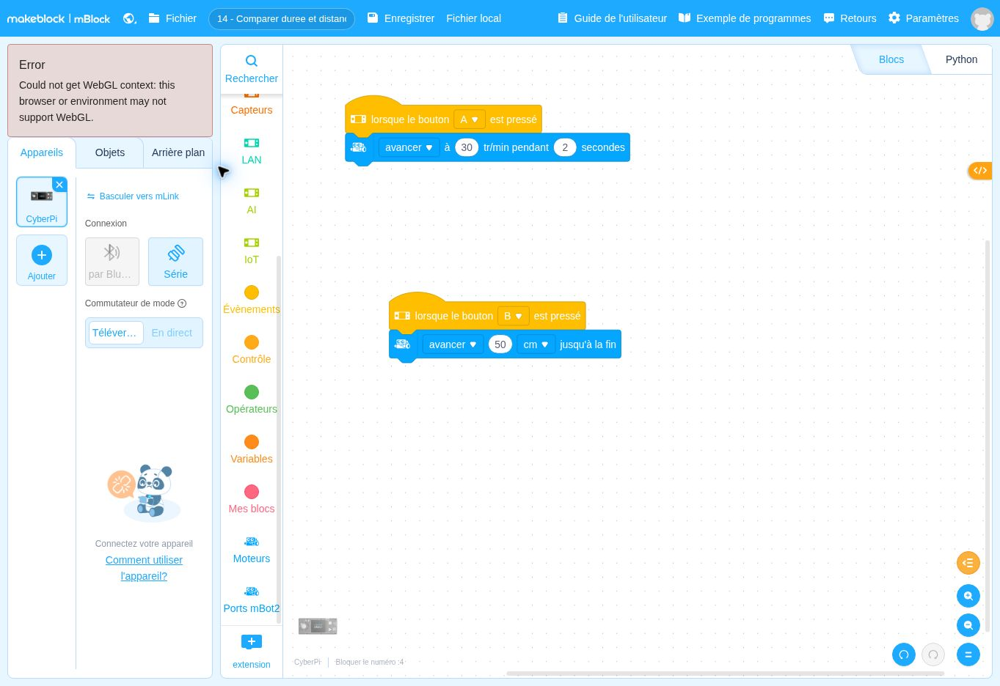

lorsque le bouton A ▾ est presséDépart
Ce que fait ce bloc : Bloc de départ : le programme se lance quand on appuie sur le bouton A du CyberPi, comme dans les fiches précédentes.
Pourquoi il est là : Vous choisissez le moment du départ.
Avancer pendant 2 secondes ou avancer de 50 cm : est-ce la même chose ?
Avant de regarder le programme, écrivez en une phrase ce que vous pensez que le robot va faire. Lancement : A lance « 2 secondes » ; B lance « 50 cm » (attention : ici B ne sert pas d’arrêt).
Se tromper ici est utile : c’est ce qui fait apprendre.
Voici le programme en français. Les lignes décalées vers la droite sont à l’intérieur d’une répétition ou d’un choix.
Quand j’appuie sur A : j’avance à 30 tr/min pendant 2 secondes. Quand j’appuie sur B : j’avance de 50 centimètres et j’attends d’avoir fini.

DépartContrôleAction du robotInformationÉcranMémoireCalcul
Ce que fait ce bloc : Bloc de départ : le programme se lance quand on appuie sur le bouton A du CyberPi, comme dans les fiches précédentes.
Pourquoi il est là : Vous choisissez le moment du départ.
Ce que fait ce bloc : Fait rouler le robot à 30 tr/min pendant exactement 2 secondes, puis l’arrête.
Pourquoi il est là : Ici on contrôle une durée et une vitesse, mais pas la distance : c’est la distance réelle que vous allez découvrir.
Mot à connaître. La distance parcourue dépend de la vitesse et de la durée, mais aussi du sol, de la batterie, des roues.
Ce que fait ce bloc : Départ : se lance avec le bouton B.
Pourquoi il est là : Dans cette fiche, B est un bouton de lancement comme A.
Ce que fait ce bloc : Avance de 50 cm, puis s’arrête.
Pourquoi il est là : Ici on contrôle la distance : le robot calcule combien de tours faire.
Attention. Dans cette fiche seulement, B ne sert pas à arrêter le robot : il lance un déplacement de 50 cm.
Autres solutions : page Besoin d’aide ?
Changez un seul élément, prévoyez le résultat, puis vérifiez avec le robot.
Cette partie est réservée au formateur. Saisissez le code formateur pour l’ouvrir.
Code incorrect.